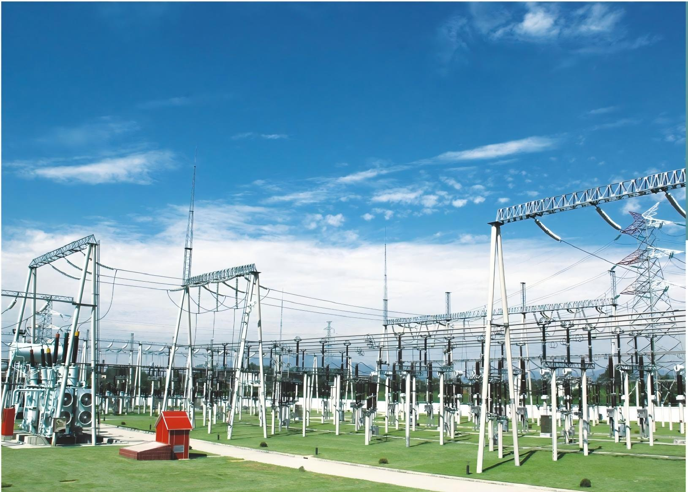
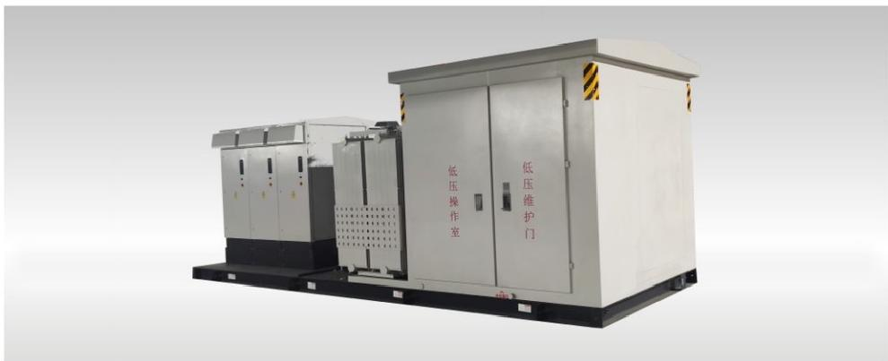
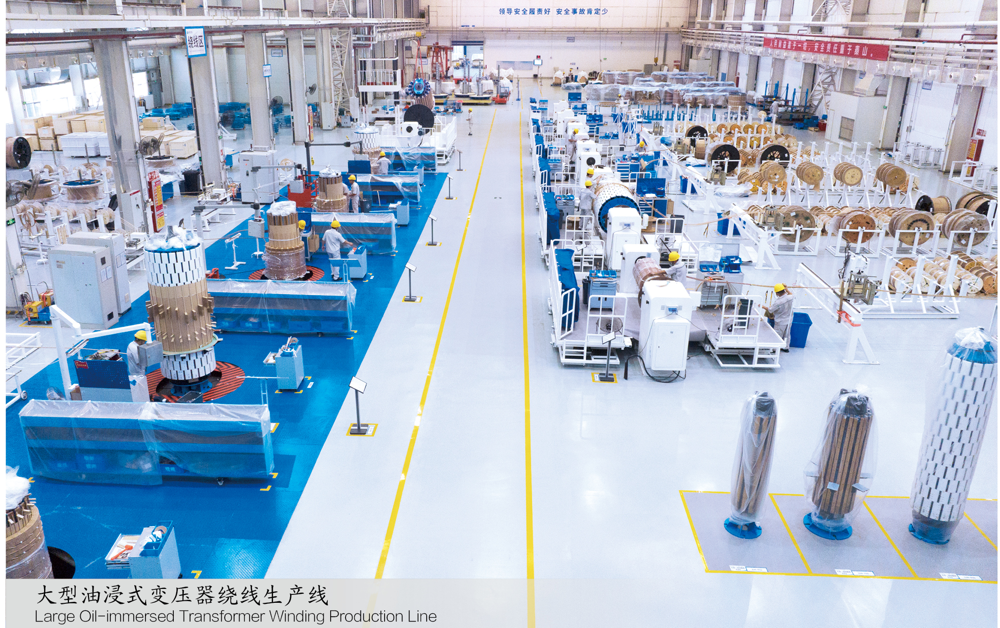
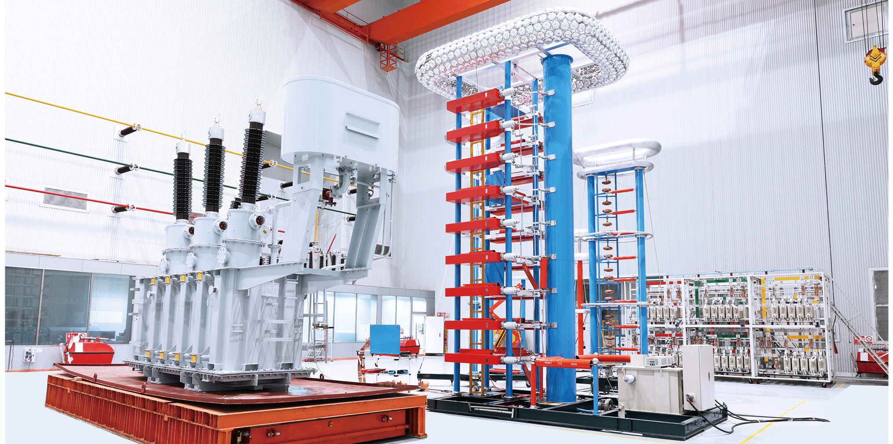
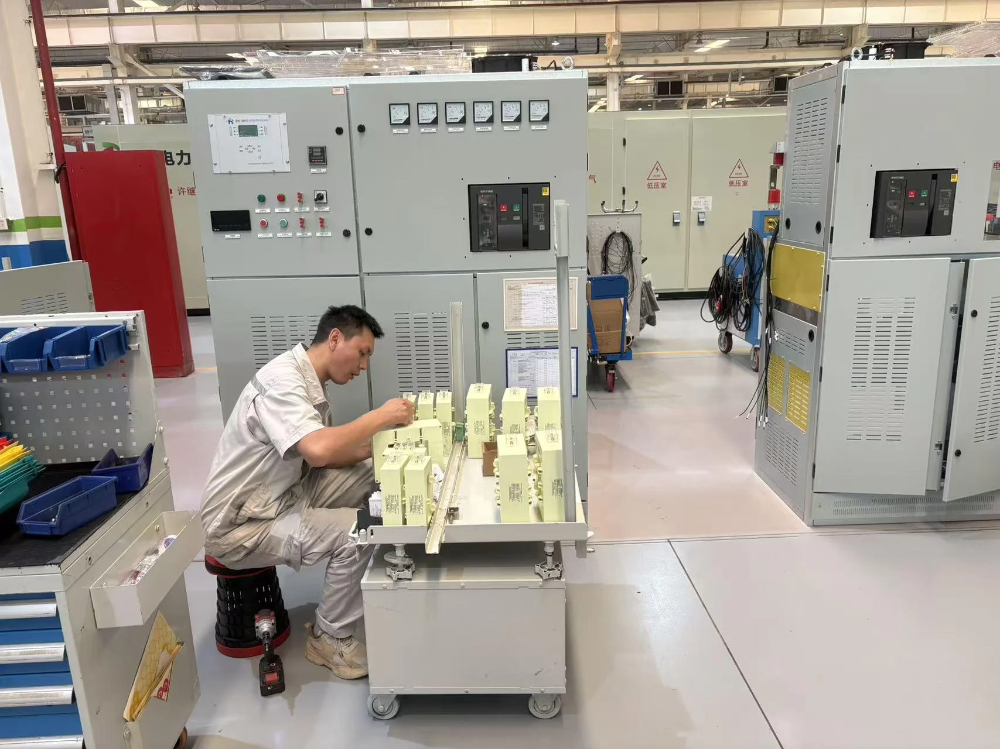
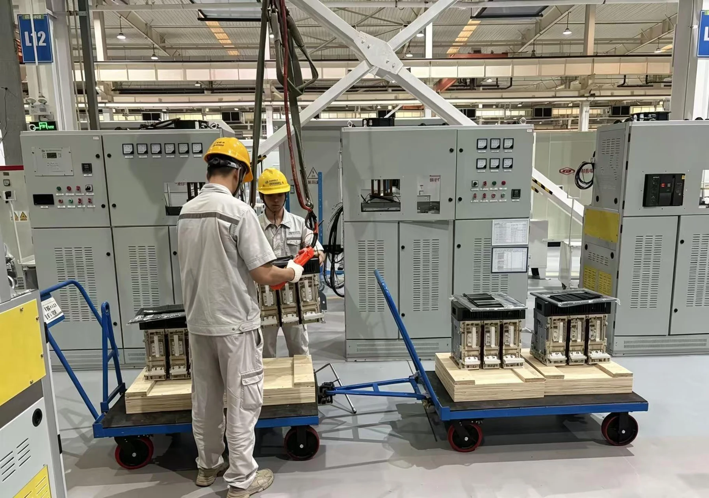
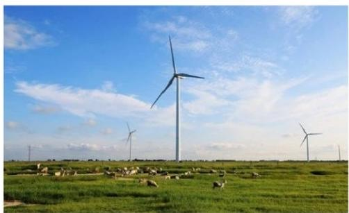

TIANYU ELECTRIC
TIANYU ELECTRIC
Established in 1996, Tianyu Electric provides transformer, prefabricated substation, switchgear and primary electrical equipment solutions for utility, renewable, industrial and infrastructure projects.
EXPLORE COMPANY →Products

Product Family
35 kV to 220 kV oil-immersed power-transformer platforms
EXPLORE RANGE →
Product Family
Oil-immersed distribution, renewable-energy and rectifier platforms
EXPLORE RANGE →
Product Family
Distribution, 35 kV-class, renewable-energy and amorphous-alloy platforms
EXPLORE RANGE →
Product Family
ZGS, YB, YBH and PV / converter / ESS integrated systems
EXPLORE RANGE →
Product Family
Mobile substations, offshore wind and renewable booster solutions
EXPLORE RANGE →Manufacturing & Support
A closer look at how Tianyu manufactures, verifies and supports transformer and substation equipment for project delivery.

Automated winding, core processing, digital production management and controlled manufacturing processes support transformer production from component preparation through assembly.

Dedicated transformer test facilities and impulse-test equipment support routine testing, agreed FAT and product verification according to the applicable project requirements.

Technical coordination, FAT support, documentation, shipment handover, installation guidance and commissioning assistance are provided according to the agreed project scope.
Global Project References
Hover a project point to review the reference. Click a point or project card to open its project page.
Independent certificates and test reports organized for procurement and engineering review.
Reference projects across renewable energy, utility grids, industry and infrastructure.
Production, assembly, testing and quality-control capability connected to engineering delivery.
CERTIFICATES & TEST REPORTS
VIEW ALL →


PROJECT CASES
MANUFACTURING
NEWS
Engineering Guide
Selection Guide
Technical FAQ
TIANYU ELECTRIC


